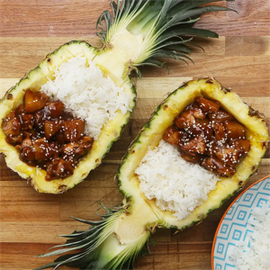

Sticky Pineapple Chicken

Description
Sticky pineapple chicken is a meal gushing with flavor
that both gets and keeps the family together!
Ingredients
- large pineapple: 1
- peanut or vegetable oil: 2 tablespoons
- boneless chicken thighs - cubed: 6
- salt: 1 teaspoon
- pepper: 1 teaspoon
- hosin sauce: 1 tablespoon
- soy sauce: 1 tablespoon
- brown sugar: 1 tablespoon
- garlic paste: 1 tablespoon
- chicken stock: 1/2 cup
- rice - cooked
- sesame seeds
Instructions
- Using a sharp knife, carefully cut the pineapple in half lengthwise. Using the knife tip, cut around the inside edge of the pineapple, being careful not to cut through the skin. Slice down and across the pineapple flesh, then scoop out the pineapple cubes with a spoon. Discard the core and set the flesh aside.
- In a large pan, heat the oil over medium heat. Add the chicken and season with salt and pepper. Fry for about 10 minutes, until browned and cooked through. Remove the chicken and set aside.
- Add the cubed pineapple, hoisin sauce, soy sauce, brown sugar, and garlic paste and cook for a few minutes. Stir in the chicken stock, bring to a boil, then simmer, stirring occasionally, until the sauce has reduced and thickened.
- Add the chicken back to the pan and stir until evenly coated with the sauce. Serve in the empty pineapple halves, along with some rice and sesame seeds.
Source
TASTY